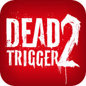
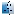

<link rel="stylesheet" href="Dead Trigger 2.css">
<nav style="color: white;">
    <h1 style="font-size: 40;"><b style="color: red;">Dead Trigger 2</b></h1>
    <br>
    <div>
        
        <br><br>
        <b style="font-size: 32;">Available In</b>
        <br><br>
        <a href="https://apps.apple.com/us/app/dead-trigger-2-zombie-games/id720063540">
            <button style="color: white;">
                App Store
            </button>
        </a>
        <a href="https://play.google.com/store/search?q=dead%20trigger%202&c=apps&hl=en">
            <button style="color: white;">
                Play Store
            </button>
        </a>
        <br><br><br>
        <b style="color: red;">Realese</b> &nbsp;&nbsp;&nbsp;&nbsp;&nbsp;&nbsp;&nbsp;&nbsp;&nbsp;&nbsp;&nbsp;&nbsp;&nbsp;&nbsp;<b style="color: white;">October 23,2013</b>
        <br><br>
        <b style="color: red;">Version</b> &nbsp;&nbsp;&nbsp;&nbsp;&nbsp;&nbsp;&nbsp;&nbsp;&nbsp;&nbsp;&nbsp;&nbsp;&nbsp;&nbsp;&nbsp;<b>1.5.0</b>
        <br><br>
        <b style="color: red;">Size</b> &nbsp;&nbsp;&nbsp;&nbsp;&nbsp;&nbsp;&nbsp;&nbsp;&nbsp;&nbsp;&nbsp;&nbsp;&nbsp;&nbsp;&nbsp;&nbsp;&nbsp;&nbsp;&nbsp;&nbsp;&nbsp;<b style="color: white;">877MB</b>
        <br><br>
        <b style="color: red;">Language</b> &nbsp;&nbsp;&nbsp;&nbsp;&nbsp;&nbsp;&nbsp;&nbsp;&nbsp;&nbsp;&nbsp;<b style="color: white;">Multiple</b>
        <br><br>
        <b style="color: red;">Developer</b> &nbsp;&nbsp;&nbsp;&nbsp;&nbsp;&nbsp;&nbsp;&nbsp;&nbsp;&nbsp;&nbsp;<b style="color: white;">Madfinger Games, a.s.</b>
        <br><br>
        <b style="color: red;">Genre</b> &nbsp;&nbsp;&nbsp;&nbsp;&nbsp;&nbsp;&nbsp;&nbsp;&nbsp;&nbsp;&nbsp;&nbsp;&nbsp;&nbsp;&nbsp;&nbsp;&nbsp;<b style="color: white;">Action, Arcade</b>
        <br><br>
        <b style="color: red;">Engine</b> &nbsp;&nbsp;&nbsp;&nbsp;&nbsp;&nbsp;&nbsp;&nbsp;&nbsp;&nbsp;&nbsp;&nbsp;&nbsp;&nbsp;&nbsp;<b style="color: white;">NVIDIA Tegra 4 Engine</b>
        <br><br>
        <b style="color: red;">Platform:</b> </b> <details><b> &nbsp;IOS</b>
        <br>
         &nbsp;Android
        <br>
        &nbsp;&nbsp;Mac
        <br>
        &nbsp;&nbsp;pc
        <br>
        Template:WebGL</details>
        <br><br>
        <b style="color: red;">Price</b> &nbsp;&nbsp;&nbsp;&nbsp;&nbsp;&nbsp;&nbsp;&nbsp;&nbsp;&nbsp;&nbsp;&nbsp;&nbsp;&nbsp;&nbsp;&nbsp;&nbsp;&nbsp;<b style="color: white;">Free</b>
        <br><br>
        <b style="color: red;">Preceded by</b> &nbsp;&nbsp;&nbsp;&nbsp;&nbsp;&nbsp;<b style="color: white;">Dead Trigger</b>
    </div>
    <b style="font-size: 25;">Dead Trigger 2 is a free-to-play first-person shooter
        <br>
        game developed by MADFINGER Games a.s.
        <br>
        <b style="color: red;">dead trigger 2</b> is the sequel to the game that started 
        <br>
        the series, Dead Trigger. It was announced January
        <br>
        6th,2013,and released on October 23 2013 for Anroid
        <br>
        and IOS devices. It is the 8th game developed by
        <br>
        <b style="color: red;">Madfinger Games,a.s.</b>for Android and IOS devices.
        <br>
        It rubes on the new NVIDIA tegra 4 engine, and is
        <br>
        powered by Unity. Dead Trigger 2 was later ported
        <br>
        into Facebook on February 20,2014.</b>
        <br><br><br><br><br><br><br><br><br><br><br><br><br><br>
        <h2 style="font-size: 30;"><b style="color: red;">Gameplay</b></h2>
        <br>
        <b style="font-size: 20;"> Dead Trigger 2 is a Zombie-apocalypse-themed first-person shooter,
        <br>
        currently available on IOS and Android mobile devices. Running on
        <br>
        the Unity game engine, the game features a Progression system,
        <br>
        numerous enviroments, unlockable and upgradable weapons, and
        <br>
        quick-play mission types.
        <br><br>
        The Dead Trigger 2 is a free-movement shooter;rather than the on-rail
        <br>
        gameplay tipical of mobile zombie shooter, the player controls the
        <br>
        character's movement like a typical console or PC FPS. The game
        <br>
        features two dramatically different control paradigms; with the default
        <br>
        controls, the players merely aims at zombies-his or her weapons will
        <br>
        fire automatically when a zombie is underneath the crosshair.
        <br><br>
        Gameplay typically revolves around completing objectives while Killing
        <br>
        zombies. The player has limited amount of health that is refreshed at the
        <br>
        start of each mission. The player loses health when hit by zombie or by
        <br>
        certain enviroment hazards. The players can regain health by taking pain
        <br>
        killers or getting a health powerup from a special zombie.
        <br><br>
        Enemies come in two flavour, standard zombies and Special zombies. Standard
        <br>
        zombies often plod along at a slow pace and attack with their arms, but some
        <br>
        may sprint or carrry melee weapons or increased damage. Special Zombies have
        <br>
        distinct appearances and unique traits; thaey are deadlier and tougher to kill,
        <br>
        drop <b style="color: red;">Blueprint</b> or large amount of <b style="color: red;">cash</b> when killed.
    </b>
    <br><br>
    <h2 style="font-size: 30;">Characters</h2>
    <b style="color: red;">
        &nbsp;&nbsp;&nbsp;&nbsp;&nbsp;&nbsp;&nbsp; <b style="color: white;">●</b>&nbsp;&nbsp;&nbsp;&nbsp;&nbsp;Kyle
        <br>
        &nbsp;&nbsp;&nbsp;&nbsp;&nbsp;&nbsp;&nbsp;&nbsp;<b style="color: white;">●</b>&nbsp;&nbsp;&nbsp;&nbsp;&nbsp;Tara
        <br>
        &nbsp;&nbsp;&nbsp;&nbsp;&nbsp;&nbsp;&nbsp;&nbsp;<b style="color: white;">●</b>&nbsp;&nbsp;&nbsp;&nbsp;&nbsp;Buck
        <br>
        &nbsp;&nbsp;&nbsp;&nbsp;&nbsp;&nbsp;&nbsp;&nbsp;<b style="color: white;">●</b>&nbsp;&nbsp;&nbsp;&nbsp;&nbsp;Roberto
        <br>
        &nbsp;&nbsp;&nbsp;&nbsp;&nbsp;&nbsp;&nbsp;&nbsp;<b style="color: white;">●</b>&nbsp;&nbsp;&nbsp;&nbsp;&nbsp;Yusif
        <br>
        &nbsp;&nbsp;&nbsp;&nbsp;&nbsp;&nbsp;&nbsp;&nbsp;<b style="color: white;">●</b>&nbsp;&nbsp;&nbsp;&nbsp;&nbsp;Herman
        <br>
        &nbsp;&nbsp;&nbsp;&nbsp;&nbsp;&nbsp;&nbsp;&nbsp;<b style="color: white;">●</b>&nbsp;&nbsp;&nbsp;&nbsp;&nbsp;DR. Adamos
        <br>
        &nbsp;&nbsp;&nbsp;&nbsp;&nbsp;&nbsp;&nbsp;&nbsp;<b style="color: white;">●</b>&nbsp;&nbsp;&nbsp;&nbsp;&nbsp;Eddie
        <br>
        &nbsp;&nbsp;&nbsp;&nbsp;&nbsp;&nbsp;&nbsp;&nbsp;<b style="color: white;">●</b>&nbsp;&nbsp;&nbsp;&nbsp;&nbsp;T.N.T
    </b>
    <br><br>
    <h2 style="font-size: 32;">Weapons</h2>
    <h3 style="font-size: 26;">
        <b style="color: red;">Pistols</b>
    </h3>
    <b style="color: red;">
        &nbsp;&nbsp;&nbsp;&nbsp;&nbsp;&nbsp;&nbsp;<b style="color: white;">●&nbsp;&nbsp;&nbsp;&nbsp;&nbsp;</b>CZ-75
        <br>
        &nbsp;&nbsp;&nbsp;&nbsp;&nbsp;&nbsp;&nbsp;<b style="color: white;">●&nbsp;&nbsp;&nbsp;&nbsp;&nbsp;</b>Desert Egle
        <br>
        &nbsp;&nbsp;&nbsp;&nbsp;&nbsp;&nbsp;&nbsp;<b style="color: white;">●&nbsp;&nbsp;&nbsp;&nbsp;&nbsp;</b>Dual Glock
        <br>
        &nbsp;&nbsp;&nbsp;&nbsp;&nbsp;&nbsp;&nbsp;<b style="color: white;">●&nbsp;&nbsp;&nbsp;&nbsp;&nbsp;</b>Dual Mauser C96
        <br>
        &nbsp;&nbsp;&nbsp;&nbsp;&nbsp;&nbsp;&nbsp;<b style="color: white;">●&nbsp;&nbsp;&nbsp;&nbsp;&nbsp;</b>Dual Peacemaker
        <br>
        &nbsp;&nbsp;&nbsp;&nbsp;&nbsp;&nbsp;&nbsp;<b style="color: white;">●&nbsp;&nbsp;&nbsp;&nbsp;&nbsp;</b>Dual Rhino 6DDS
        <br>
        &nbsp;&nbsp;&nbsp;&nbsp;&nbsp;&nbsp;&nbsp;<b style="color: white;">●&nbsp;&nbsp;&nbsp;&nbsp;&nbsp;</b>Lar Grizzly
        <br>
        &nbsp;&nbsp;&nbsp;&nbsp;&nbsp;&nbsp;&nbsp;<b style="color: white;">●&nbsp;&nbsp;&nbsp;&nbsp;&nbsp;</b>Wolf Lady
    </b>
    <br><br>
    <h3 style="font-size: 26;"><b style="color: red;">Rifles</b></h3>
    <b style="color: white;">
        &nbsp;&nbsp;&nbsp;&nbsp;&nbsp;&nbsp;&nbsp;●&nbsp;&nbsp;&nbsp;&nbsp;&nbsp;<b style="color: red
        ;">M1 Garand</b>
        <br>
        &nbsp;&nbsp;&nbsp;&nbsp;&nbsp;&nbsp;&nbsp;●&nbsp;&nbsp;&nbsp;&nbsp;&nbsp;<b style="color: red;">Winchester'94</b>
    </b>
    <h3 style="font-size: 26;"><b style="color:red;">Assault Riffle</b></h3>
    <b style="color: white;">
        &nbsp;&nbsp;&nbsp;&nbsp;&nbsp;&nbsp;&nbsp;●&nbsp;&nbsp;&nbsp;&nbsp;&nbsp;<b style="color: red;">AK-74</b>
        <br>
        &nbsp;&nbsp;&nbsp;&nbsp;&nbsp;&nbsp;&nbsp;●&nbsp;&nbsp;&nbsp;&nbsp;&nbsp;<b style="color: red;">FN 2000</b>
        <br>
        &nbsp;&nbsp;&nbsp;&nbsp;&nbsp;&nbsp;&nbsp;●&nbsp;&nbsp;&nbsp;&nbsp;&nbsp;<b style="color: red;">M-4</b>
        <br>
        &nbsp;&nbsp;&nbsp;&nbsp;&nbsp;&nbsp;&nbsp;●&nbsp;&nbsp;&nbsp;&nbsp;&nbsp;<b style="color: red;">M-16</b>
        <br>
        &nbsp;&nbsp;&nbsp;&nbsp;&nbsp;&nbsp;&nbsp;●&nbsp;&nbsp;&nbsp;&nbsp;&nbsp;<b style="color: red;">Metal Storm</b>
        <br>
        &nbsp;&nbsp;&nbsp;&nbsp;&nbsp;&nbsp;&nbsp;●&nbsp;&nbsp;&nbsp;&nbsp;&nbsp;<b style="color: red;">SA80</b>
        <br>
        &nbsp;&nbsp;&nbsp;&nbsp;&nbsp;&nbsp;&nbsp;●&nbsp;&nbsp;&nbsp;&nbsp;&nbsp;<b style="color: red;">SCAR</b>
        <br>
        &nbsp;&nbsp;&nbsp;&nbsp;&nbsp;&nbsp;&nbsp;●&nbsp;&nbsp;&nbsp;&nbsp;&nbsp;<b style="color: red;">Steyr AUG</b>
        <br>
        &nbsp;&nbsp;&nbsp;&nbsp;&nbsp;&nbsp;&nbsp;●&nbsp;&nbsp;&nbsp;&nbsp;&nbsp;<b style="color: red;">taurus CT G2</b>
        <br>
        &nbsp;&nbsp;&nbsp;&nbsp;&nbsp;&nbsp;&nbsp;●&nbsp;&nbsp;&nbsp;&nbsp;&nbsp;<b style="color: red;">Tavor TAR-21</b>
        <br>
        &nbsp;&nbsp;&nbsp;&nbsp;&nbsp;&nbsp;&nbsp;●&nbsp;&nbsp;&nbsp;&nbsp;&nbsp;<b style="color: red;">XM8</b>
    </b>
</nav>